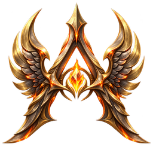
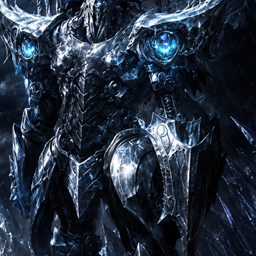
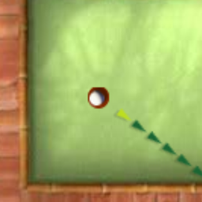
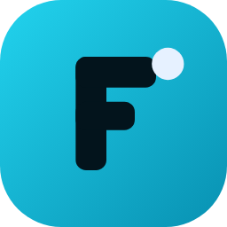
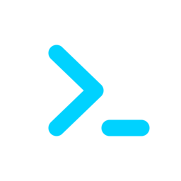
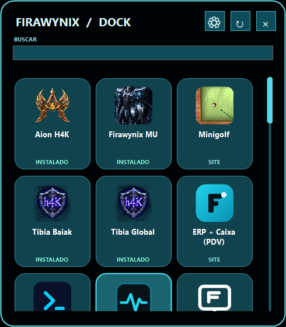

Aion H4KINSTALADO
UM LUGAR PARA TUDO DA FIRAWYNIX
Seus apps a um clique da barra de tarefas.
Jogos, ferramentas e projetos do Firawynix Center em um painel flutuante. Fixe o Dock na barra de tarefas e abra o que precisa sem procurar pelo computador.
PAINEL FLUTUANTE 01 / 03
FIRAWYNIX / DOCK

Firawynix MUINSTALADO
MinigolfSITE
ERP + CaixaSITE
Service DeskSITENenhum item encontrado.
SIMPLES DESDE O PRIMEIRO CLIQUEO Center continua sendo o centro.
O Center continua sendo o centro.
O Dock deixa tudo à mão.
Fixe na barra
Deixe o ícone do Firawynix Dock onde preferir na barra de tarefas do Windows.
Abra o painel
Um clique mostra os programas logo acima do ícone, na posição em que ele estiver.
Escolha e siga
Veja o que está instalado, procure pelo nome e abra o programa ou site desejado.
DO SEU JEITODiscreto quando precisa.
Discreto quando precisa.
Pronto quando você chama.
Integrado ao Firawynix Center
O Dock lê o catálogo e reconhece os programas instalados. Novos itens aparecem após a atualização do catálogo, sem alterar os arquivos do Center.
CATÁLOGO + INSTALAÇÕESTransparência ajustável
Escolha de 0% a 100% para o fundo. Ícones, nomes e cartões continuam legíveis.
Busca rápida
Digite um nome na demonstração acima para filtrar os cartões instantaneamente.
Visual limpo
Oculte moldura, pesquisa ou menus. O botão direito mantém o acesso às configurações.
Fecha sozinho
Ao clicar fora ou deixar de usar o painel, ele sai do caminho automaticamente.
VISUAL REAL DO APLICATIVO
Um painel compacto, sem tomar a tela.
A captura mostra o Dock em execução com os cartões do catálogo. As imagens e o estado de instalação vêm do aplicativo no computador.
Download na Store após a aprovação
PERGUNTAS RÁPIDAS
O essencial, sem complicação.
Preciso alterar o Firawynix Center?
Não. O Dock lê o catálogo e as informações de instalação do Center, mas não modifica seus arquivos.
Um programa novo aparece automaticamente?
Depois que o catálogo do Center for atualizado, use a opção de atualizar do Dock. Ele verifica novamente os itens e as instalações.
Posso esconder todos os controles?
Sim. Você pode ocultar moldura, busca e menus. O botão direito abre as configurações para reativá-los.